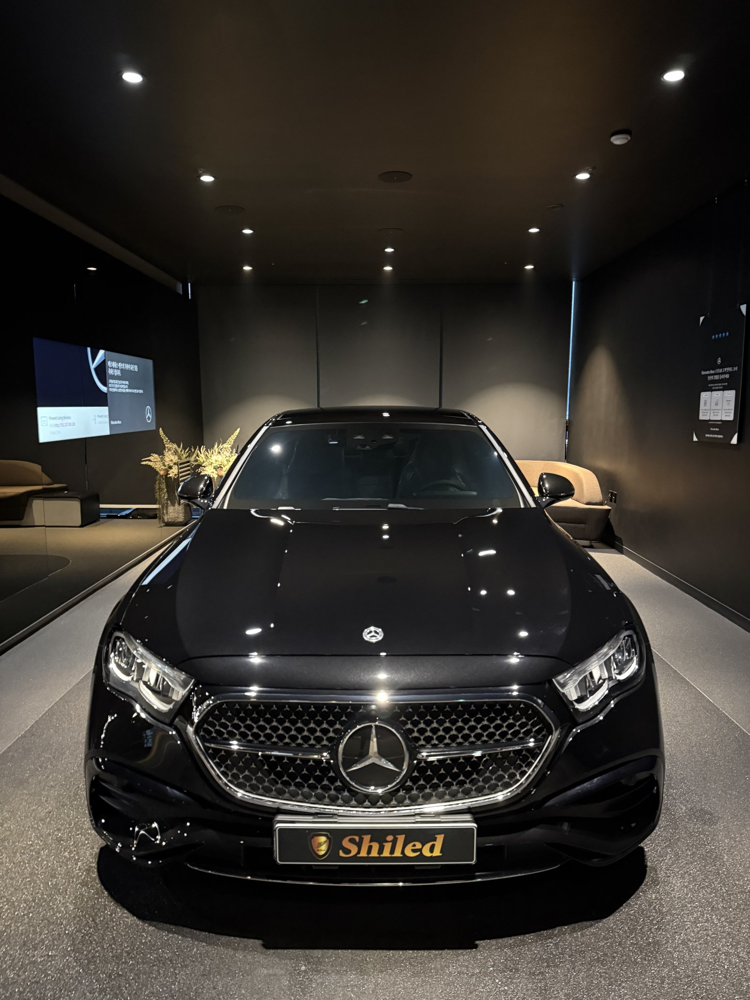
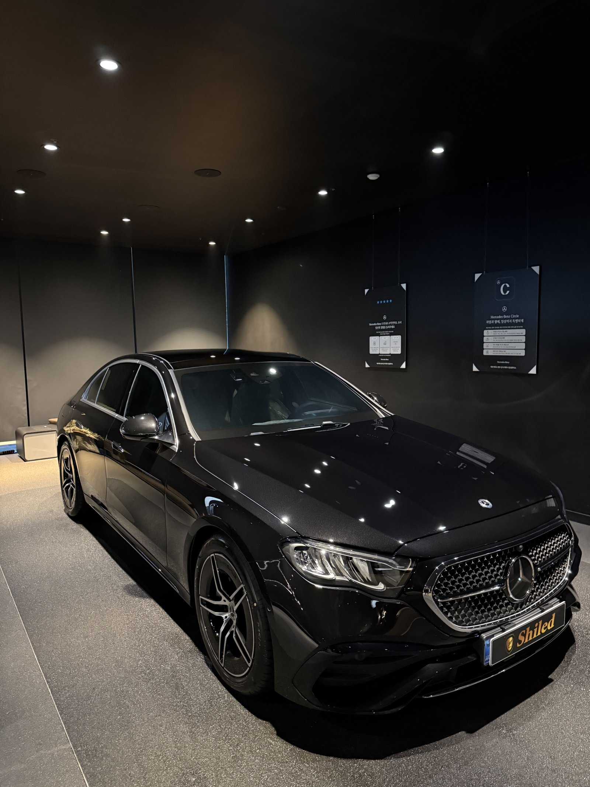
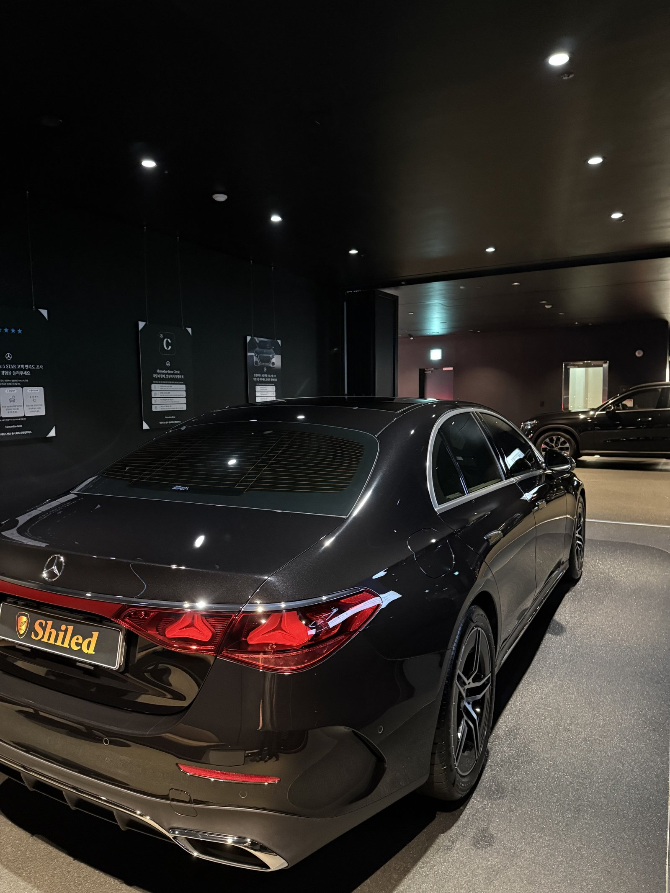
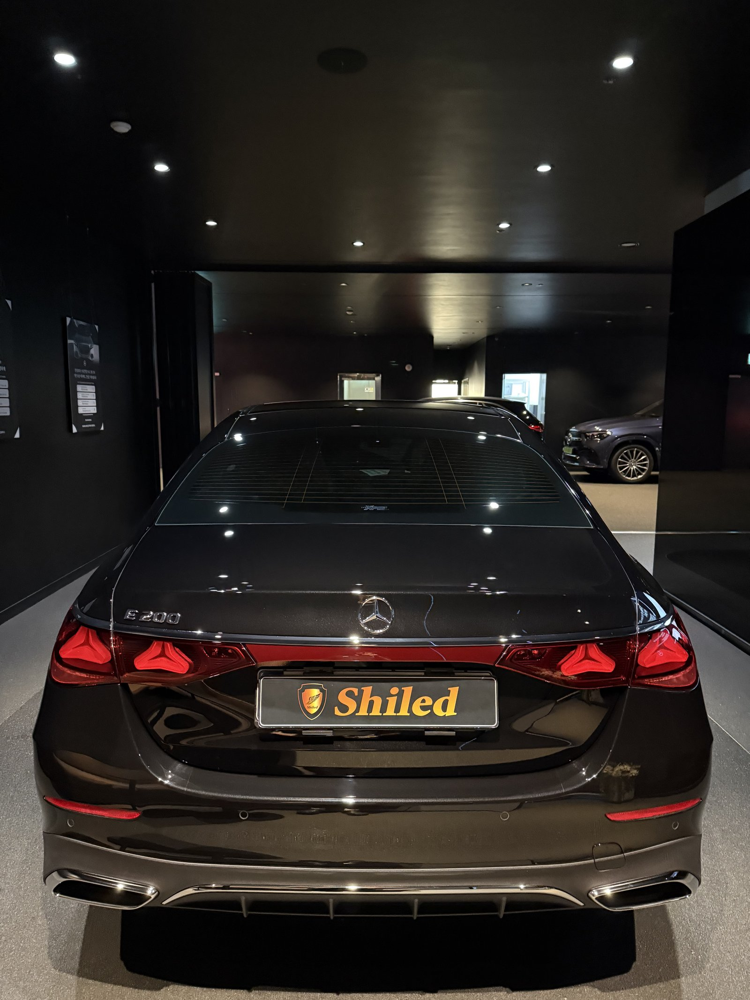
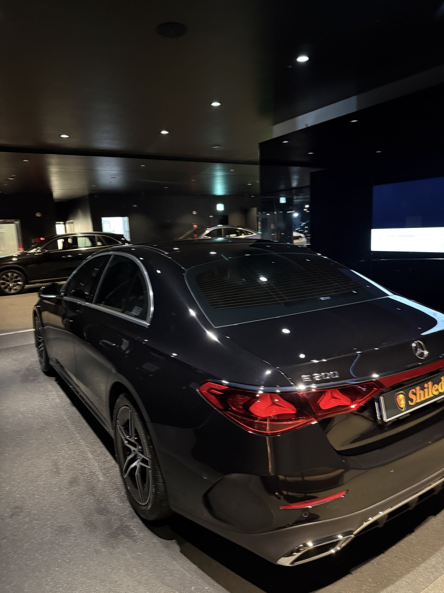
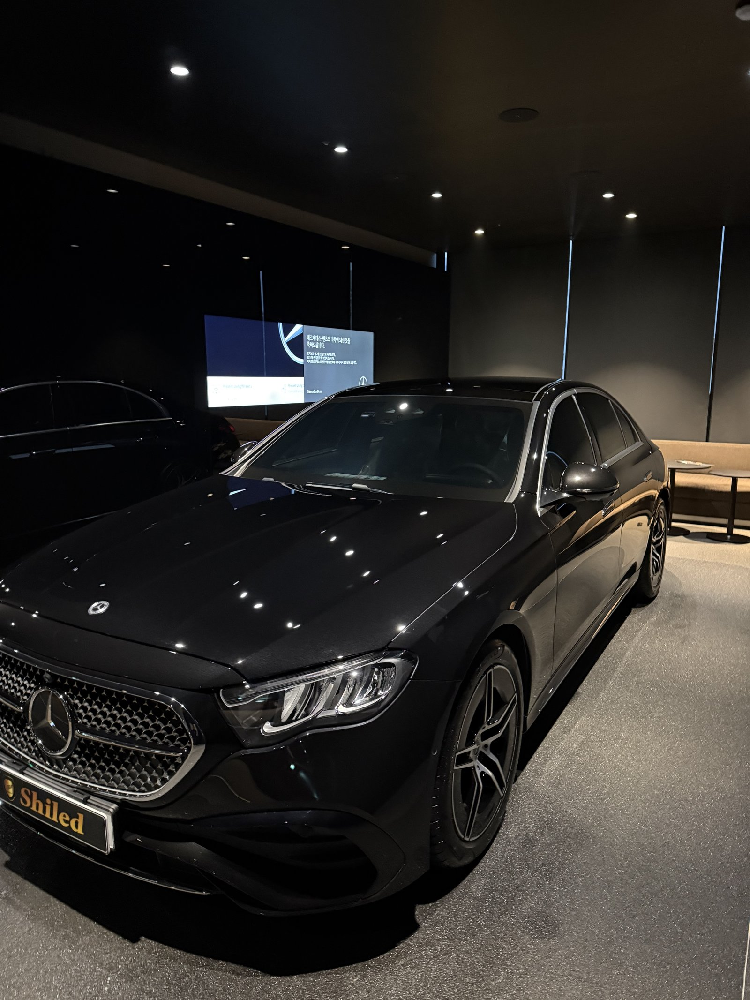
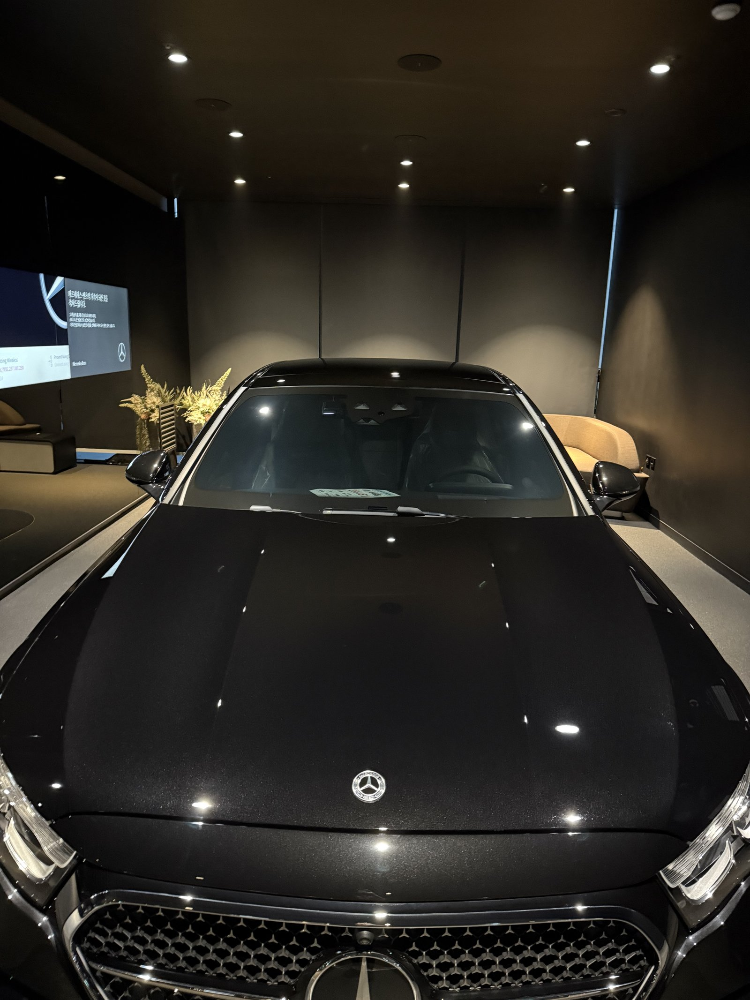
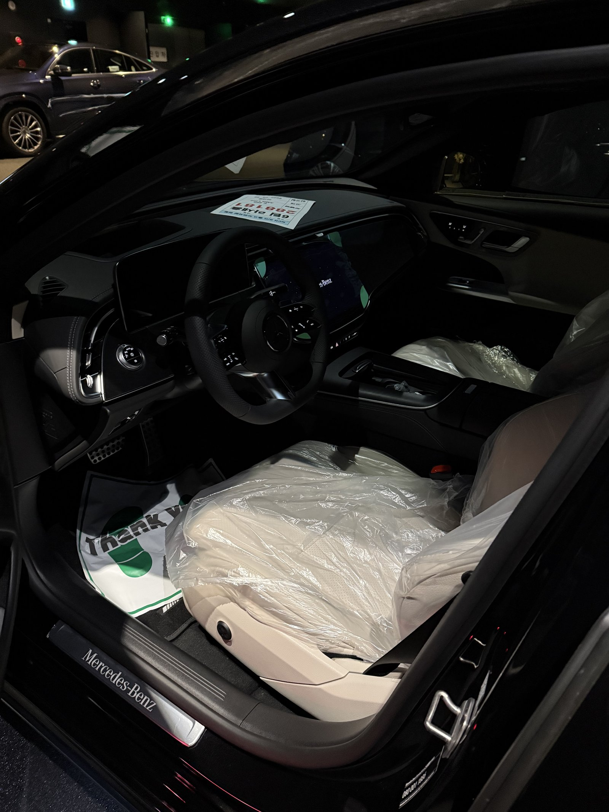
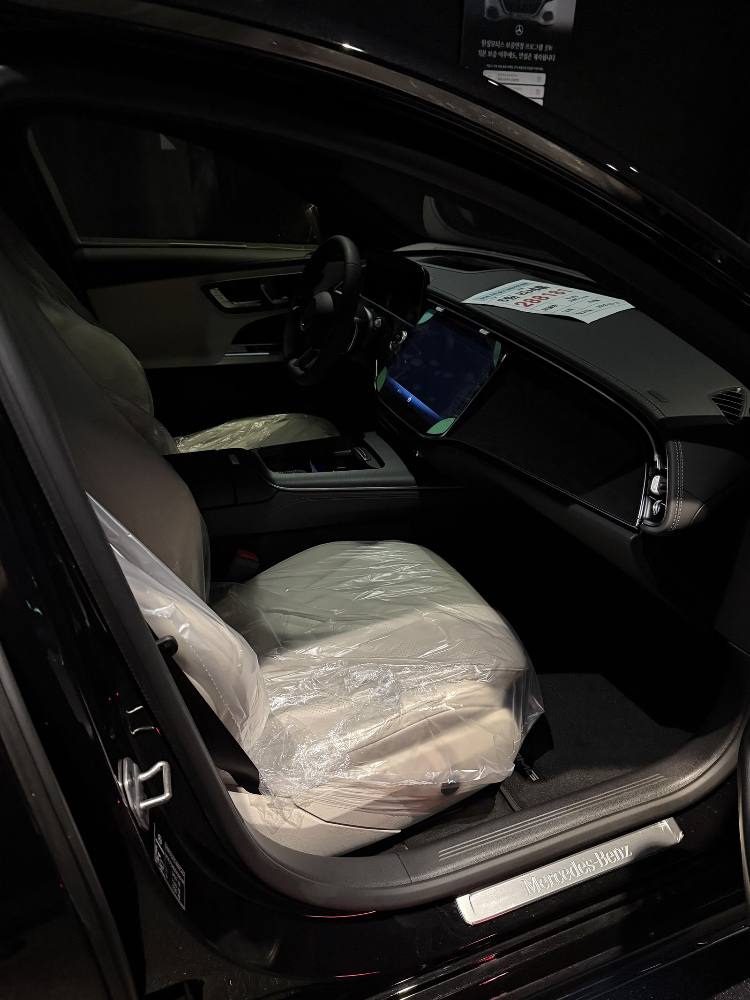
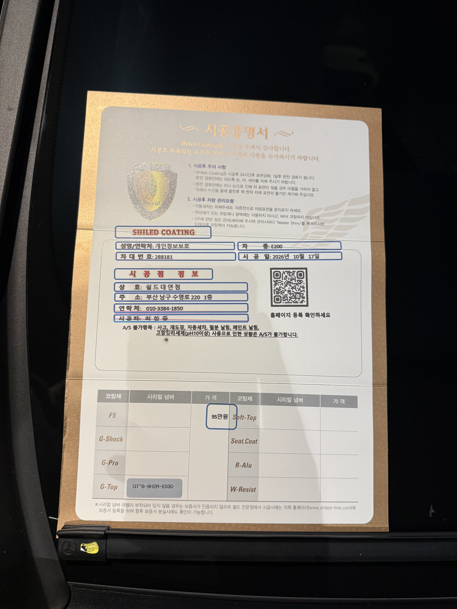

벤츠 E200 AMG라인, 검정 신차입니다.
이 차는 F5가 아니라 G-TOP으로 진행했습니다.
발수·방오를 먼저 고른 부산 유리막코팅 기록입니다.

어두운 조명 아래 검정 차는 무엇을 보나요?
점 조명이 맺히는 모양입니다.
검정 차체는 천장 조명이 점으로 또렷하게 맺혀야 면이 고른 것입니다.
번지거나 흐려 보이는 자리가 있으면 그 면을 다시 확인합니다.
보닛과 트렁크 리드를 특히 오래 봅니다.



E200 AMG 검정, 어디를 더 확인했나요?
AMG라인은 범퍼 하단과 사이드 스커트에 굴곡이 많습니다.
굴곡진 자리는 코팅제가 고이기 쉬워 마무리 닦기를 한 번 더 합니다.
측후면과 휠아치 주변까지 같은 순서로 점검했습니다.



기술자의 팁
G-TOP 발수 차량은 세차 후 물이 잘 흘러내려 드라잉이 쉽습니다. 다만 그늘에서 세차하고 물방울이 마르기 전에 닦아내야 검정 차체에 물자국이 남지 않습니다.
E200 AMG 검정에 G-TOP을 올린 이유
G-TOP은 발수와 방오성에 특화된 코팅입니다.
검정은 물자국과 먼지가 가장 잘 보이는 색입니다.
물이 잘 털리면 그만큼 자국이 덜 남습니다.
코팅제는 대표가 직접 개발·제조한 제품입니다.
이번 부산 유리막코팅은 G-TOP 싱글로 진행했습니다.


시공증명서도 함께 드립니다
모든 시공 차량에 시공증명서를 드립니다.
차종·시공일·코팅제 시리얼 번호가 적혀 있고, 홈페이지에 등록해 보증을 받으실 수 있습니다.

차종·시공일·코팅제 시리얼이 기재된 시공증명서
자주 묻는 질문
Q. G-TOP은 어떤 분께 맞나요?
A. 발수와 방오를 먼저 보시는 분께 맞습니다. 물이 잘 털리고 오염이 덜 붙어 세차 주기를 편하게 가져가실 수 있습니다.
Q. 검정 차에 F5가 아니라 G-TOP을 고르기도 하나요?
A. 네. 색감보다 관리 편의를 우선하시면 G-TOP을 고릅니다. 검정은 물자국이 잘 보여 발수가 좋으면 관리가 수월합니다.
Q. 코팅 후 세차는 언제부터 하나요?
A. 코팅이 자리 잡는 기간에는 물세차를 피하시고, 이후에는 중성 샴푸로 부드럽게 세차하시면 됩니다.
Q. 왜 출고 전에 코팅하나요?
A. 도장면이 가장 깨끗할 때 올린 코팅이 가장 오래갑니다. 운행과 세차로 잔기스가 생기기 전에 입혀두는 것이 핵심입니다.
Q. 쉴드광택 위치와 예약은 어떻게 하나요?
A. 부산 남구 유엔로220 1F 쉴드광택입니다. 예약·상담은 010-3384-1850, 대표 최한중이 직접 상담하고 책임 시공합니다.
새 차일수록 시작점이 다릅니다. 가장 깨끗할 때 입혀두십시오.
제품을 직접 만드는 사람이 직접 시공합니다.
부산에서 신차 유리막코팅을 고민 중이시면 편하게 연락 주십시오.
어떤 차를 타냐보다 어떻게 타냐가 중요합니다~!
시공 중에는 전화를 받지 못할 때가 많습니다.
카카오톡으로 차종과 원하시는 시공을 남겨주시면 확인 후 답변드립니다.
쉴드광택 · 부산 남구 유엔로220 1F · 대표 최한중